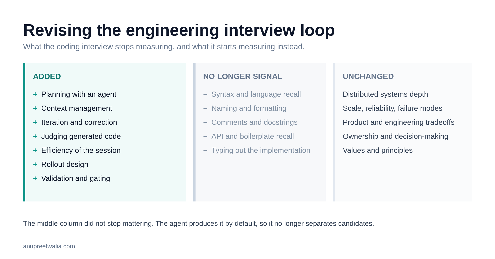

Revising the Engineering Interview Loop
Skill-based interviewing gives us a way to change hiring as engineering itself changes. How I am updating the loop (coding with agents, feature design through rollout) now that coding agents are part of the job.

I have always preferred skill-based interviews. The basic premise is that hiring should evaluate whether someone has the skills required to do the job, and the interview process should be designed specifically to collect that evidence.
Structured interviewing has existed for a long time, and Google helped make the approach common in technology companies. One of the reasons for introducing more structure into interviewing was to reduce the effect of unconscious bias. If interviewers decide independently what they care about after meeting a candidate, decisions can easily become influenced by familiarity, background, communication style, or simply what an individual interviewer happens to value. Defining the skills, questions and evaluation criteria in advance creates a more consistent basis for making the decision.
There are a few parts to making this work in practice.
Start with the skills the team needs
For a startup, I start the hiring process by looking at the existing engineering team and identifying the skills we are missing.
This matters more at smaller companies because there is very little redundancy in the team. If you have eight engineers and nobody has experience operating a particular kind of distributed system, that is a meaningful gap. Before ~30 people, individual hires can materially change what the engineering organization is capable of doing.
So, you start with skills, and the job description follows from this exercise. Some of those skills will be common across engineering roles and others will exist because of the particular gap/specialization we are trying to fill. The interview loop can then be constructed around them. Every important skill in the job description should have somewhere in the loop where we evaluate it. Similarly, every interview in the loop should correspond to something we have decided is important for the role.
This also makes it possible to notice when an interview loop has accumulated sessions that no longer serve a purpose. Engineering organizations often inherit interview formats from previous companies or continue running a particular interview because it has always been part of the process. Starting from the skills gives us a way to periodically reconsider whether each session is still useful.
Define the evaluation before interviewing candidates
For each session in the loop, we need to decide what skills are being tested, how we will test them and how the interviewer should score what they observe.
The scoring rubric should be created at the same time as the interview loop mostly to avoid updating the evaluation for a skill that was not part of the criterion while interviewing someone we like. When that happens, the candidates we saw earlier were evaluated against a different standard, and we no longer have a consistent basis for comparing them. We can decide that we got the role definition wrong and change it for subsequent candidates, but the evaluation for a particular loop should remain consistent.
The interviews themselves should also be administered as similarly as possible. Candidates should get equivalent problems, comparable information and roughly the same amount of help from the interviewer. Interviewers need to understand what they are evaluating and what different scores mean.
There will always be judgment involved in interviewing. The purpose of structure is to make that judgment operate against criteria we agreed on before knowing who the candidate was.
The engineering skills I have traditionally evaluated
For engineering roles, I have generally organized the loop around four areas: coding, system design, feature design, and values and principles. Fifth loop gets added if we are looking for specialization like Data Science or FE etc.
The coding interview looks at programming ability and the engineering practices someone applies while writing software. I care about whether they can understand a problem, structure an implementation, reason through edge cases, debug it and leave behind code that another engineer could work with.
System design looks at depth in distributed systems and the ability to reason about scale. The specifics depend on the role, but this is where we can explore data models, service boundaries, consistency, reliability, latency, failure modes, capacity and operational concerns. The goal is to understand how well someone can reason about systems once the problem is larger than a single program.
Feature design is closer to the normal interaction between engineering and product. A PM can provide a product requirement and the engineer works through what would be required to implement it. This gives us a view into how they deal with ambiguity, identify the core technical work, make product and engineering tradeoffs, define interfaces and data models, and decide what should be included in the initial implementation.
The values and principles interview covers how someone approaches their work and makes decisions. I use it to understand what they value in an engineering organization, how they think about ownership, quality, speed, disagreement and collaboration, and whether there are important areas of disconnect with the way the company operates.
These categories have been fairly stable for me until coding agents! This is the new version I have, and I am actively looking at how others are doing it.
| Interview | Skills tested before | Skills tested now | Rubric |
|---|---|---|---|
| Coding → Coding with agents | Problem decomposition, programming fundamentals, code structure, correctness, debugging, testing and engineering practices | All of the previous skills, plus planning with an agent, context management, task decomposition, iteration, evaluation of generated code and efficient use of the agent | Problem understanding: develops a coherent model of the problem before making significant changes. Plan: creates a reasonable implementation approach and decomposes work into verifiable steps. Context: gives the agent relevant context without repeatedly expanding context unnecessarily. Iteration: recognizes incorrect or unproductive directions and adjusts effectively. Code judgment: reads and evaluates generated code rather than assuming it is correct. Correctness: produces a working, tested implementation and can explain it. Efficiency: makes reasonable use of time, interactions and tokens to reach the result. |
| System design | Distributed systems, data modeling, service boundaries, scalability, reliability, consistency, latency, capacity and failure modes | Largely unchanged | Decomposition: identifies the important components and responsibilities. Tradeoffs: understands and explains architectural choices rather than relying on standard patterns. Scale: identifies where the design changes as load and data grow. Reliability: reasons about failures, recovery and degraded operation. Data: chooses appropriate storage and consistency models. Operations: considers observability, capacity and production behavior. |
| Feature design → Feature design + rollout | Translating product requirements into technical design, managing ambiguity, APIs, data models, edge cases, implementation scope and product/engineering tradeoffs | All of the previous skills, plus rollout design, feature gating, experimentation, observability, validation and iteration | Requirements: turns the product requirement into a clear technical problem. Scope: identifies a reasonable first implementation and avoids unnecessary work. Design: produces coherent APIs, data models and system changes. Rollout: defines how the feature can be exposed incrementally and disabled safely. Observability: identifies the operational and product signals required during rollout. Validation: defines what would indicate that the feature is working and what would cause the team to stop or change course. Iteration: designs the implementation so that the team can learn and modify the feature without excessive cost. |
| Values and principles | Ownership, quality, speed, collaboration, disagreement, decision-making and alignment with how the company operates | Largely unchanged | Decision-making: can explain how they make decisions when there are competing priorities. Ownership: demonstrates an appropriate level of responsibility for outcomes. Tradeoffs: has a considered approach to quality, speed and scope. Collaboration: can work through disagreement and incorporate information from others. Self-awareness: can describe decisions that did not work and how their thinking changed. Alignment: no significant disconnect between the candidate's working principles and the environment we are hiring them into. |
| Specialization, when required | Role-specific depth such as frontend, data science, ML, security or infrastructure | Changes based on the skill gap identified for the role | Defined when the role is created. The rubric should describe the specific depth required for this hire rather than using a generic specialization interview. |
Coding with agents
Engineers on our teams are increasingly going to write software with coding agents. I want the coding interview to reflect that environment.
The candidate should have access to an agent and be given an engineering task. The interview can then evaluate how they use the agent as part of the implementation process.
There are several skills involved here that weren't visible in a traditional coding interview. One is context management. The candidate has to determine what information the agent needs, how much of the codebase or problem to expose, and how to keep the agent working with the relevant context as the task progresses.
Planning is another part of it. For a sufficiently complicated task, I would expect the engineer to understand the problem and develop an approach before asking an agent to make broad changes. That plan may itself be developed with the agent. What is critical here is whether the engineer has a coherent model of what they are trying to build and can break the work into pieces that can be executed and verified.
Iteration is also observable. Agents will produce implementations that are incomplete, unnecessarily complicated or simply wrong. The engineer needs to recognize this, determine what caused the problem and decide whether to correct the current approach or change direction. They also need to know when to inspect the code directly rather than continuing to prompt.
Efficiency is the third axis of evaluation. An engineer can get to a working solution through a large number of agent interactions and a very large context, or they can provide better context and direction and get there with considerably less work. Tokens, elapsed time and number of interactions aren't useful as isolated metrics, but they provide additional information about how effectively someone is using the tool.
The resulting interview still tests programming. The candidate has to understand the generated code, evaluate its correctness, make technical decisions and take responsibility for the final implementation. We are also evaluating a new set of skills around directing the agent that produced some of that implementation.
System design
I don't see a significant reason to change the system design interview yet.
The implementation tools available to engineers have changed, but the systems we operate still have the same underlying properties. Engineers need to understand distributed systems, data, reliability, capacity, latency and failure modes. They need to be able to make architectural decisions and understand how those decisions behave as usage grows.
Agents can make implementing a proposed architecture considerably faster, which may eventually change some of the emphasis in system design interviews. For now, the underlying skill being measured is still one I want to evaluate directly.
Feature design and rollout
Feature design needs a broader scope.
As implementation becomes faster, teams can build more features and more variations of a feature in the same amount of time. That increases the importance of being able to test those features cheaply and safely. If experimentation and rollout remain expensive, the organization moves the bottleneck from implementation to validation.
I would therefore extend the feature design interview through the rollout of the feature.
After working through the implementation, the candidate should describe how they would introduce it into production. This includes feature gating, the initial population that receives the feature, the ability to disable it, the telemetry required to understand its behavior, and the tests that need to exist before and during rollout.
The candidate should also define how they would validate the feature. Depending on the product, this could involve operational metrics, product metrics, qualitative feedback or an experiment. I want to understand what information they would collect, how they would decide whether to expand the rollout, and what they would do if the results were unclear.
This is also useful for understanding how an engineer thinks about iteration. The first implementation does not need to answer every product question. A feature can be designed so that the team can expose it to a small population, learn something specific and make the next implementation decision with more information.
Feature gating and observability become part of the technical design in this model. They need to be considered while designing the feature because they affect its architecture and determine how easily the team can operate and modify it after release.
This could be a separate interview for roles where experimentation and rollout are particularly important. For most product engineering roles, I would start by extending the existing feature design session rather than adding another interview.
Values and principles
I would keep the values and principles interview largely unchanged.
The tools engineers use will continue to change, and teams will develop new working practices around them. The values interview is intended to understand the more persistent aspects of how someone works: how they make decisions, what they expect from other engineers, how they handle disagreement, what they consider good engineering work and what kind of environment allows them to do their best work.
There will naturally be some discussion of AI and agents here because they are now part of engineering work, but I don't think they require a separate values framework.
Updating the loop
With these changes, the engineering loop I would use today consists of coding with agents, system design, feature design and rollout, and values and principles.
That particular set of interviews isn't intended to be permanent. It reflects the engineering skills I currently want to evaluate. As the way we build software changes, I expect the skills to change again.
The process for changing the interview loop should remain the same. Look at the engineering organization and the work it needs to do. Identify the skills that are missing or particularly important. Put those skills into the definition of the role. Design interviews that allow candidates to demonstrate them. Define the scoring criteria before interviewing candidates, and administer the resulting loop consistently.
That is the useful part of a skill-based interview system. It gives us a way to change hiring as engineering itself changes without having to reinvent how we think about hiring each time.